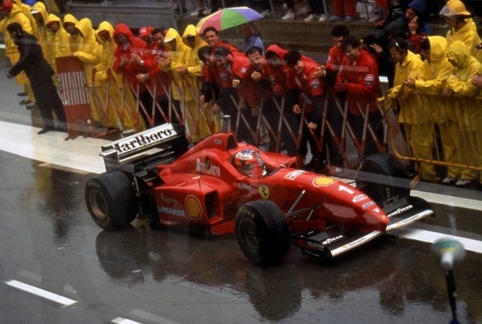
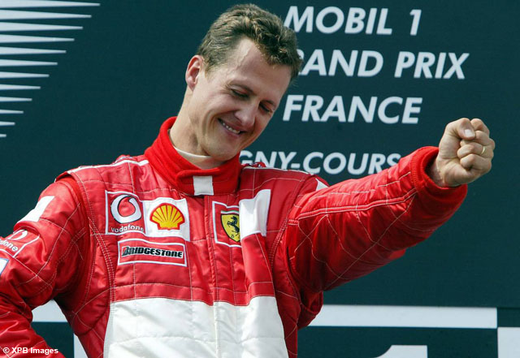

L'année 1996 est l'année du changement. Il abandonne l'écurie Benetton avec laquelle il vient de conquérir deux titres mondiaux, et arrive avec son no 1 chez Ferrari, une équipe en pleine reconstruction sous l'impulsion du Français Jean Todt. Pari osé, qui mettra quelque temps avant de s'avérer gagnant. Malgré une voiture peu efficace, il parvient à atteindre la troisième place du championnat des pilotes, en remportant trois Grands Prix, une première pour Ferrari depuis la saison 1990. Il gagne ainsi en Espagne sous une pluie battante, au terme d'une domination rappelant les démonstrations des plus grands pilotes de l'histoire, mais aussi en Belgique et surtout en Italie, devant des milliers de tifosi en délire. Ces derniers ont trouvé leur nouvelle idole, et commencent à entrevoir des jours meilleurs pour la Scuderia après les années noires qu'elle vient de traverser.
En 1997, tandis que les progrès de Ferrari se confirment, Schumacher décroche cinq victoires (Monaco, Canada, France, Belgique et Japon) et aborde l'ultime course de la saison avec un point d'avance sur Jacques Villeneuve. Surpris par une attaque de son rival, Schumacher donne un coup de volant en sa direction et provoque un accrochage. Las, ce geste n'a d'autre effet que de provoquer son propre abandon, ainsi qu'une immense polémique sur le comportement anti-sportif du pilote allemand. Villeneuve est sacré et Schumacher est déclassé du championnat, pour conduite antisportive. Il se verra aussi imposer par la FIA de participer à des actions pour la sécurité routière. Schumacher conservera cependant tous ses points et ses victoires acquis lors de cette saison 1997. En 1998, toujours sur Ferrari, il gagne six Grands Prix (Argentine, Canada, France, Grande-Bretagne, Hongrie et Italie) mais est à nouveau battu au championnat dans l'ultime course de la saison, cette fois par Mika Häkkinen, sur McLaren-Mercedes. En 1999, le duel Häkkinen-Schumacher se poursuit, mais est interrompu par la blessure de Schumacher, victime d'une fracture de la jambe au Grand Prix de Grande-Bretagne à la suite d'une violente sortie due à une rupture mécanique dans le virage de Stowe. Il revient en fin de saison pour essayer, sans succès, de faire gagner le titre pilotes à son coéquipier Eddie Irvine. Malgré une étonnante démonstration de force en Malaisie où il offre la victoire à Irvine, il est impuissant au Japon pour contrer Häkkinen. Avec deux victoires dans la saison (Saint-Marin et Monaco), il termine cinquième du classement pilotes, et contribue au titre de champion constructeurs de la Scuderia Ferrari, le neuvième et le premier depuis 1983.
L'année 2000 est celle de la consécration pour le tandem Schumacher-Ferrari. Après un début de saison impérial favorisé par les problèmes de fiabilité rencontré par les McLaren (il remporte les trois premiers Grands Prix en Australie, Brésil, Saint-Marin, puis s'impose en Europe et au Canada) et malgré un passage à vide durant l'été (trois abandons consécutifs notamment) qui permet à Häkkinen de refaire une grande partie de son retard, et même de prendre l'avantage au championnat du monde après le Grand Prix de Hongrie, il est titré après une fin de saison dominatrice puisqu'il gagne les quatre derniers Grands Prix de la saison (Italie, États-Unis, Japon, Malaisie). Michael Schumacher devient le premier pilote depuis Jody Scheckter en 1979 à être titré sur Ferrari. Ce succès est le premier d'une longue série pour l'Allemand. En 2001, il décroche son quatrième titre après avoir remporté neuf Grands Prix (Australie, Malaisie, Espagne, Monaco, Europe, France, Hongrie, Belgique et Japon), égalant une troisième fois (après 1995 et 2000) le record de Mansell en 1992. Le scénario se répète en 2002 avec onze victoires (Australie, Brésil, Saint-Marin, Espagne, Autriche, Canada, Grande-Bretagne, France, Allemagne, Belgique et Japon) qui lui permettent d'établir un nouveau record, et un titre acquis dès le GP de France disputé au mois de juillet, grâce à une formidable voiture. Jamais dans l'histoire un pilote n'avait été sacré aussi tôt dans la saison. Cette saison quasi parfaite est cependant entachée par le Grand Prix d'Autriche, durant lequel Barrichello, dominateur durant tout le week-end, est obligé de céder la tête de la course à son coéquipier à proximité de l'arrivée.
En 2003, face à une opposition souvent mieux armée (au cœur de l'été, les Michelin de ses adversaires dominent les Bridgestone de Ferrari), il ne gagne que six courses, et doit attendre le dernier Grand Prix de la saison pour décrocher son sixième titre, le Finlandais Kimi Räikkönen étant resté menaçant jusqu'au bout. Le titre s'est joué au Grand Prix des États-Unis, où Schumi remporta une superbe victoire, sous la pluie, parti de la septième place sur la grille. Ce titre aura un goût triste pour Michael qui, lors du Grand Prix de Saint-Marin, a perdu sa mère Elisabeth, décédée d'une hémorragie. Ce jour-là, il remporta la victoire, son frère Ralf terminant quatrième. En 2004, Schumacher et la Scuderia reprennent leur domination sur la Formule 1, pour une saison de tous les records. Schumacher s'impose à treize reprises sur dix-huit courses et est sacré champion du monde pour la septième fois. Fin 2004, il participe à la « Race of Champions » où il s'incline en finale contre Heikki Kovalainen mais remporte son duel tant attendu face au champion français de rallye Sébastien Loeb. En 2004, Schumacher est le deuxième sportif le mieux payé au monde, derrière le golfeur Tiger Woods. Ses revenus annuels sont estimés à environ 80 millions de dollars.
L'année 2005 se révèle être une année bien difficile pour Schumacher et la Scuderia Ferrari : au volant d'une voiture décevante, équipée qui plus est de pneus Bridgestone bien peu performants, il ne remporte qu'un seul Grand Prix, celui des États-Unis à Indianapolis, déserté par les pilotes équipés de pneus Michelin (leurs pneus ne permettant pas de concourir dans des conditions de sécurité suffisante). Il termine cependant la saison à une inespérée troisième place au championnat pilote, profitant intelligemment des ennuis de Montoya et Fisichella lors des dernières courses.
En 2006, sa voiture est plus performante, et le samedi 22 avril 2006, en réalisant le meilleur temps des essais qualificatifs lors du Grand Prix de Saint-Marin, Michael Schumacher s'adjuge la soixante-sixième pole position de sa carrière et dépasse donc le record — mythique et paraissant à l'époque inaccessible — du nombre de pole positions (65) détenu jusque-là par le Brésilien Ayrton Senna, qu'il avait égalé lors du Grand Prix de Bahreïn pour l'ouverture de la saison. Il lui aura fallu 238 Grands Prix contre seulement 161 au pilote brésilien pour réaliser cette performance. Cette saison, la lutte pour le titre est acharnée avec le jeune champion du monde espagnol Fernando Alonso. Bien mieux parti que le septuple champion du monde, Alonso mène largement le championnat à mi-saison avec six victoires et neuf podiums. Ferrari et Schumacher se ressaisissent à partir du Grand Prix des États-Unis et réduisent peu à peu leur retard sur les Renault. Le 10 septembre 2006, il annonce sa retraite pour la fin de la saison, après avoir remporté le Grand Prix d'Italie à Monza. Bien qu'il ait pris la tête du championnat à l'issue du Grand Prix de Chine, alors qu'il ne restait que deux courses à disputer, son abandon lors du Grand Prix du Japon en raison de l'explosion de son moteur et une crevaison dès le début de l'épreuve lors du Grand Prix du Brésil auront eu raison de ses ambitions. Il se retire temporairement sur une quatrième place et la place du vice-champion du monde.